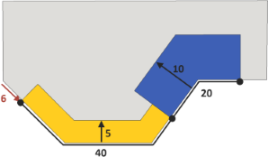

splitAndSetbackPerimeter operation
Syntax
splitAndSetbackPerimeter(splitOffset) { length1 : depth1 : operations1 | ... | lengthn-1 : depthn-1 : operationsn-1 } { remainder : operations }
splitAndSetbackPerimeter(splitOffset) { length1 : depth1 : operations1 | ... | lengthn-1 : depthn-1 : operationsn-1 }* { remainder : operations }
splitAndSetbackPerimeter(splitOffset, firstEdgeIndex, selectedEdgesMask) { length1 : depth1 : operations1 | ... | lengthn-1 : depthn-1 : operationsn-1 } { remainder : operations }
splitAndSetbackPerimeter(splitOffset, firstEdgeIndex, selectedEdgesMask) { length1 : depth1 : operations1 | ... | lengthn-1 : depthn-1 : operationsn-1 }* { remainder : operations }
Parameters
- splitOffset (float)
The offset of the start of the split pattern. The relative operator ' permits values relative to the total length of all selected edges. - firstEdgeIndex (float)
Index of the edge where the split pattern starts (0-based). Too large or negative indices are modulo wrapped to a correct index. Default is 0. - selectedEdgesMask (bool[])
An array containing a Boolean value for each face edge determining whether the edge is part of the operation. By default all edges are selected. - length (float)
Split length. Depending on the prefix, the lengths along the face perimeter are interpreted in the following way:no prefix (absolute) The edge section's length will be exactly length. ' (relative) The edge section's length will be length * total length of all selected edges. ~ (floating) With the ~ prefix, the remaining spaces between the split parts with absolute dimensions are automatically adapted. If multiple floating parts are defined within a split, the dimensions are weighed proportionally. - depth
The setback distance of the edge section. - operations
A sequence of shape operations to execute on the newly created shape. - *
Repeat switch: the repeat switch triggers the repetition of the defined split as many times as possible. The number of repetitions and floating dimensions are adapted to the best solution (best number of repetitions and least stretching). - remainder : operations
A sequence of shape operations to execute on the remainder of the polygon.
Description
The splitAndSetbackPerimeter operation combines concepts from the split and setback operations: First the perimeter of a polygon is split into sections according to the specified lengths. Then each section is setback by its respective depth. Finally, a new shape is generated for each section and for the remainder of the polygon.
By default, the split pattern is evaluated along the entire perimeter of the polygon, starting on the first edge and going counterclockwise around the polygon. The start of the split pattern can be moved using a splitOffset. To use the operation independent on the underlying geometry index order, the firstEdgeIndex and selectedEdgesMask can be set, typically with functions evaluating the spatial context (see examples below). Technically, the operation can be restricted to a part of the perimeter by setting the firstEdgeIndex and passing a selectedEdgesMask. In this case, the selected edges are arranged in a chain on which the split is done. The array must be in face-edge order, i.e. the first element refers to the first edge of the first face, the second element to the second edge of the first face, and so on. Shared edges are considered separately for each face. If the array does not contain enough elements the respective missing face edges are considered not to be selected. If the array contains more elements than the number of total face edges the respective elements are ignored. Such an array could be constructed using the comp function with the component selector set to fe (face edges).
Geometry tags
The operation automatically applies semantic component tags to the resulting edge components. Refer to the setback operation for more details.Related
- split operation
- splitArea operation
- split attribute
- setback operation
- setbackPerEdge operation
- shapeLUO operations
- comp function
- setTagsFromEdgeAttrs operation
Examples
Basic
 |
Lot --> splitAndSetbackPerimeter(6)
{ 40 : 5 : Yellow |
20 : 10 : Blue }
{ remainder : Grey }
Yellow --> color("#F2BB1D")
Blue --> color("#3957A5")
Grey --> color("#CAC9C6")
|
Relative splitOffset
Lot --> splitAndSetbackPerimeter('0.1)
{ '0.5 : 10 : extrude(15) Yellow |
~1 : 0 : NIL |
'0.4 : 8 : extrude(10) Blue |
~1 : 0 : NIL }
{ remainder : Grey }
The start of the split pattern is offset by 10% (red arrow) of the length of the perimeter. Note that the splitOffset allows the split pattern to start and end on an edge rather than a vertex.
|
Using context-based functions to select edges
const INF = 100000
// (8)[0.0,16.5,INF,INF,INF,INF,INF,-15.0]
frontXCoords = comp(fe) { front : pivot.px | all : INF }
// 7
frontLeftMostEdgeIndex = sortIndices(frontXCoords)[0]
// (8)[true,true,false,false,false,false,false,true]
frontEdgesMask = comp(fe) { front : true }
Lot --> splitAndSetbackPerimeter(0,
frontLeftMostEdgeIndex, frontEdgesMask)
{ ~1 : 0 : NIL |
'0.7 : 10 : extrude(12) Yellow |
~1 : 0 : NIL }
{ remainder : Grey }
A section centered on the front edges of the perimeter is setback using the firstEdgeIndex and selectedEdgesMask parameters. In this example, the comp and sortIndices functions as well as
the pivot attribute are used to find the index of the leftmost front edge and to construct the edge selection mask.
|
Setback distances
Lot --> splitAndSetbackPerimeter(0)
{ ~30 : rand(3, 15) : extrude(rand(2, 10)) Yellow }*
{ remainder : Grey }
The perimeter is repeatedly split and setback by a random distance. Note that the setback distance is individually evaluated for each section.
|
Lot --> splitAndSetbackPerimeter(0)
{ ~30 : split.index : extrude(split.index) Yellow }*
{ remainder : Grey }
The perimeter is repeatedly split and setback based on the split attribute.
|
Handling overlaps
 |
Left --> splitAndSetbackPerimeter(3)
{ 2 : 6 : Yellow | 2 : 0 : NIL | 2 : 4 : Blue }
{remainder : Grey }
Right --> splitAndSetbackPerimeter(3)
{ 2 : 4 : Yellow | 2 : 0 : NIL | 2 : 6 : Blue }
{ remainder : Grey }
The yellow and blue shapes overlap. The overlap belongs to the shape that has been generated with larger depth and is cut away from the other.
|
Also see the split operation for more examples on split patterns.
Copyright ©2008-2024 Esri R&D Center Zurich. All rights reserved.